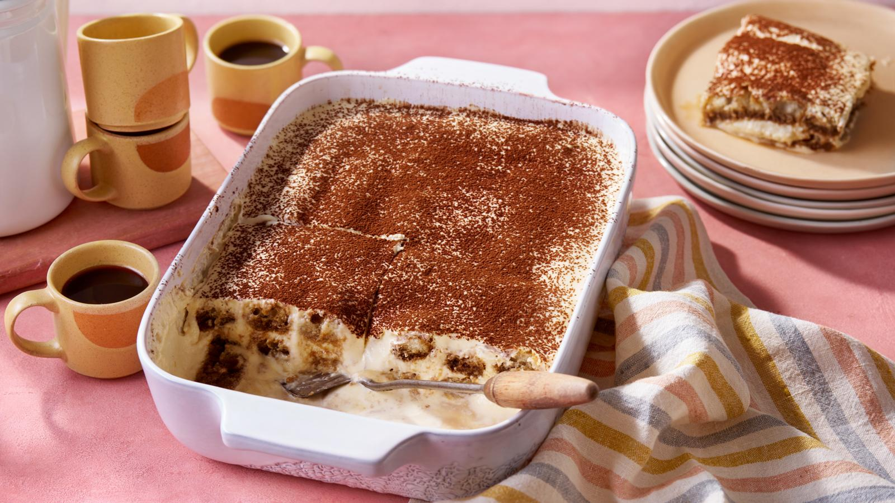

Tiramisu

Description
This authentic Italian tiramisu is the perfect make-ahead dessert. It's boozy and creamy and lightened a bit with egg whites to give it an airy texture.
Ingredients
- 46 free-range eggs, separated
- 200g/7oz caster sugar
- 250g/9oz mascarpone
- 250ml/9fl oz double cream
- 250ml/9fl oz espresso coffee
- 170ml/6fl oz sweet Marsala wine
Steps
- In a large bowl, whisk the egg yolks and sugar together with an electric whisk until pale and creamy. Mix the mascarpone into the egg mixture until well combined.
- In a separate bowl, whip the double cream until soft peaks form when the whisk is removed. With a metal spoon, fold the whipped cream into the mascarpone, egg and sugar mixture.
- In another very clean bowl, whip the egg whites until soft peaks form when the whisk is removed. Fold lightly into the mascarpone, cream and egg mixture.
- Spoon a third of the mascarpone, egg and cream mixture into a large dish of about 23cm x 33cm (9in x 13in).
- Mix the espresso and Marsala together in a shallow bowl. Dip a biscuit quickly into the espresso and Marsala mixture, then lay it on top of the mascarpone and cream mixture in the dish. Repeat the soaking and placing individually as you go or the biscuits will become too soggy to handle.
- Spoon over the next third of the mascarpone and cream mixture, followed by another layer of biscuits. Spoon over the final layer of mascarpone and cream. Cover and chill in the fridge for 24 hours.